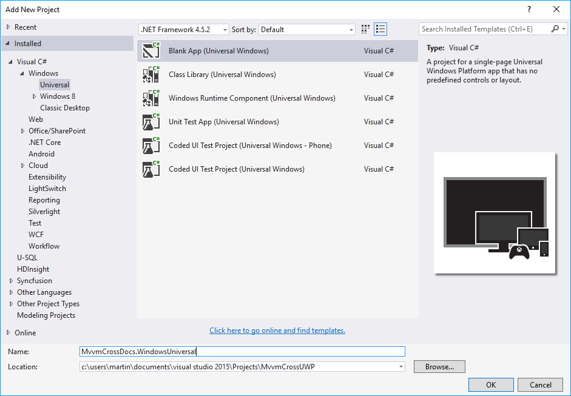
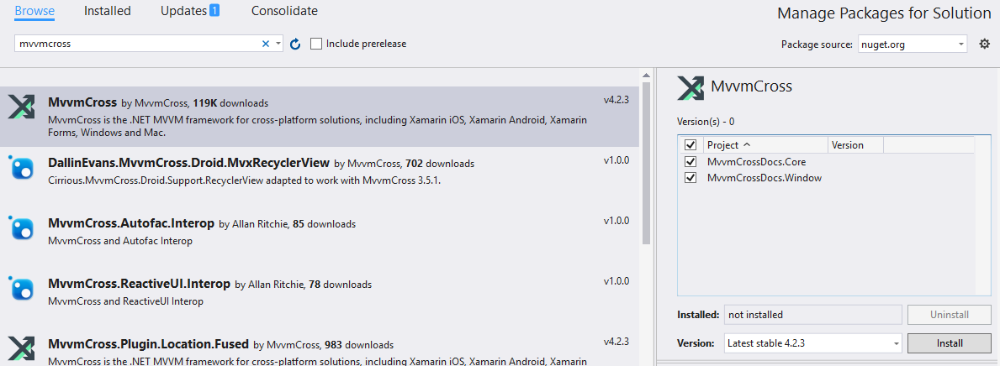
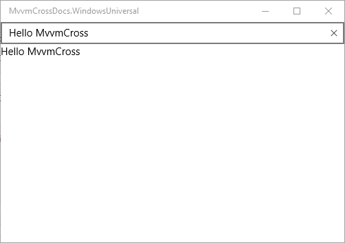

Universal Windows platform (UWP)
EditInstallation
This tutorial will walk you through the installation of MvvmCross into a new Universal Windows Platform project.
Create a new solution in Visual Studio. Right-click the solution in Solution Explorer and select Add -> New Project....
In the Add New Project dialog select the Windows Universal tab and select the Blank App template. In the bottom you can set the name. We will use MvvmCrossDocs.WindowsUniversal in this example.

Now, we will open the New Project dialog again and create a Portable Class Library, that will act as the Core shared library in MvvmCross. In the dialog click the Visual C# node and find Class Library (Portable for iOS, Android and Windows). Name the project, in our case MvvmCrossDocs.Core.
We will now want to reference the Core project inside of our Universal Windows project. To do that, right-click the References node under the UWP project in Solution Explorer and select Add reference…. In the opened dialog navigate to Projects -> Solution in the left-side pane and then check the box next to our Core project in the list.
Our projects are now ready and we can install MvvmCross from NuGet. First right-click the solution in Solution Explorer and then select Manage NuGet Packages for Solution.

In the NuGet Package Manager window choose the Browse tab and enter mvvmcross into the search box. MvvmCross package should appear as the first result, which you can select and then check the boxes next to your project names in the right hand pane. When you are done, you can click the Install button to install the package. The installation might take a while and you will be prompted to agree with the changes. Confirm the prompt with OK and continue.
Now we will need to add some basic code to get MvvmCross up and running.
First inside the MvvmCrossDocs.Core portable project create a file named App.cs and enter the following:
using MvvmCross.Platform.IoC;
namespace MvvmCrossDocs.Core
{
public class App : MvvmCross.Core.ViewModels.MvxApplication
{
public override void Initialize()
{
CreatableTypes()
.EndingWith("Service")
.AsInterfaces()
.RegisterAsLazySingleton();
RegisterAppStart<ViewModels.FirstViewModel>();
}
}
}
As you can see, in this code we are registering a first view model, which we will create now to be able to demonstrate the functionality of our setup later. Create a folder called ViewModels and inside a new file FirstViewModel.cs.
using MvvmCross.Core.ViewModels;
namespace MvvmCrossDocs.Core.ViewModels
{
public class FirstViewModel
: MvxViewModel
{
private string _hello = "Hello MvvmCross";
public string Hello
{
get {
return _hello;
}
set {
SetProperty (ref _hello, value);
}
}
}
}
Now we turn our attention to the Universal Windows Project. In the root of the project create a source file called Setup.cs with the following contents:
using MvvmCross.Core.ViewModels;
using MvvmCross.Platform.Platform;
using MvvmCross.WindowsUWP.Platform;
using Windows.UI.Xaml.Controls;
namespace MvvmCrossDocs.WindowsUniversal
{
public class Setup : MvxWindowsSetup
{
public Setup( Frame rootFrame ) : base( rootFrame )
{
}
protected override IMvxApplication CreateApp()
{
return new Core.App();
}
protected override IMvxTrace CreateDebugTrace()
{
return new DebugTrace();
}
}
}
As you can see, the DebugTrace class does not exist. This class is recommended for all MvvmCross projects and it facilitates platform-based console logging during debug. Create a new file DebugTrace.cs in the root of your UWP project and paste the following:
using System;
using System.Diagnostics;
using MvvmCross.Platform.Platform;
namespace MvvmCrossDocs.WindowsUniversal
{
public class DebugTrace : IMvxTrace
{
public void Trace( MvxTraceLevel level, string tag, Func<string> message )
{
Debug.WriteLine( tag + ":" + level + ":" + message() );
}
public void Trace( MvxTraceLevel level, string tag, string message )
{
Debug.WriteLine( tag + ":" + level + ":" + message );
}
public void Trace( MvxTraceLevel level, string tag, string message, params object[] args )
{
try
{
Debug.WriteLine( tag + ":" + level + ":" + message, args );
}
catch ( FormatException )
{
Trace( MvxTraceLevel.Error, tag, "Exception during trace of {0} {1}", level, message );
}
}
}
}
Now navigate to the App.xaml.cs file in Solution Explorer. We want to start MvvmCross when the app launches. For that to happen, find the conditional if check for app’s rootFrame.Content and replace it with the following:
if (rootFrame.Content == null)
{
var setup = new Setup( rootFrame );
setup.Initialize();
var start = MvvmCross.Platform.Mvx.Resolve<MvvmCross.Core.ViewModels.IMvxAppStart>();
start.Start();
}
Finally, we will create a sample view. Create a folder Views in the UWP project and create a new XAML Blank Page called FirstView.xaml inside.
Open the XAML file and replace its contents with the following XAML code:
<views:MvxWindowsPage
x:Class="MvvmCrossDocs.WindowsUniversal.Views.FirstView"
xmlns="http://schemas.microsoft.com/winfx/2006/xaml/presentation"
xmlns:x="http://schemas.microsoft.com/winfx/2006/xaml"
xmlns:d="http://schemas.microsoft.com/expression/blend/2008"
xmlns:mc="http://schemas.openxmlformats.org/markup-compatibility/2006"
xmlns:views="using:MvvmCross.WindowsUWP.Views"
mc:Ignorable="d">
<Grid Background="{StaticResource ApplicationPageBackgroundThemeBrush}">
<StackPanel>
<TextBox Text="{Binding Hello, Mode=TwoWay}" />
<TextBlock Text="{Binding Hello}" />
</StackPanel>
</Grid>
</views:MvxWindowsPage>
Now there is only one more thing left to do. Open the FirstView.xaml.cs code file and change the type from which the FirstView class derives to MvxWindowsPage:
public sealed partial class FirstView : MvxWindowsPage
Now everything should be correctly set up and you can try to launch the application. If everything is correct, you should see a UI very similar to the following.

Change the contents of the TextBox, and click elsewhere. The text below the TextBox should automatically update, proving that the data-binding is working as expected.
Pages abstraction and ViewModel binding
This section shows how to abstract Universal Windows Platform Page object to provide generic ViewModel binding.
If you would like to provide generic way of binding Page with ViewModel, you would propably do it like presented below:
public sealed partial class LoginPage<LoginViewModel>
{
public LoginPage()
{
this.InitializeComponent();
}
}
Unfortunately this is not possible and that is why you have to provide abstraction for Pages. To achieve that you can create generic base class like below which derives from MvxWindowsPage class:
public abstract class BaseApplicationMvxPage<TViewModel> : MvxWindowsPage<TViewModel> where TViewModel : MvxViewModel
{
}
Now you have to create abstract class of Page you would like to use (in this case LoginPage) with selected ViewModel:
public abstract class LoginPageAbstract : BaseApplicationMvxPage<LoginViewModel>
{
}
Now your code-behind page (LoginPage.xaml.cs) code should look like below:
public sealed partial class LoginPage : LoginPageAbstract
{
public LoginPage()
{
this.InitializeComponent();
}
}
In XAML code page declaration should be provided like presented below:
<abstract:LoginPageAbstract
xmlns:abstract="using:MvvmCrossDemo.UWP.Pages.Abstract"
x:Class="MvvmCrossDemo.UWP.Pages.LoginPage"
<!--rest of standard code here-->
>
// Your UI code here